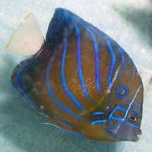
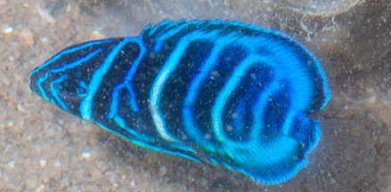
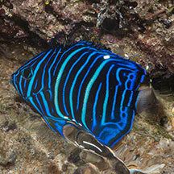

|
|
| fishes text index | photo index |
| Phylum Chordata > Subphylum Vertebrata > fishes > Family Pomacanthidae |
| Bluering
angelfish Pomacanthus annularis Family Pomacanthidae updated Sep 2020 Where seen? One adult was seen in aquarium at a restaurant on Pulau Ubin. The restaurant owners claimed to have taken the fish from the nearby shore. Juveniles sometimes seen on some of our shores. They are commonly seen around caves, wrecks or jetties, and often in murky water. Features: To about 30cm. Golden brown to orange body with diagonal blue lines on the sides and a blue ring behind the eye. The tail fin is white with bright yellow margin. Juveniles are bluish-black with a series of white and blue narrow bars on the sides. Juveniles found in shallow areas with short filamentous algae growing on rocks or dead corals. Adults often found in pairs. |
 In an aquarium at a seafood restaurant. Pulau Ubin, Jan 06 |
 The juvenile looks very different. Tanah Merah, Apr 11 |
| What does it eat? It eats sponges,
ascidians and zooplankton. Human Uses: This fish is unfortunately harvested from the wild for the live aquarium trade. Status and threats: Although the fish is not listed among the threatened animals of Singapore, like other creatures of the intertidal zone, they are affected by human activities such as reclamation and pollution. Over collection by hobbyists and overfishing can also have an impact on local populations. |
| Other sightings on Singapore shores |
On wildsingapore
flickr
|
| Other sightings on Singapore shores |
 Small Sisters Island, Aug 20 Photo shared by Marcus Ng on facebook. |
| Acknowledgements Thanks to Jeffrey Low for identifying the juvenile anglefish. Thanks also to Anthony Gill who suggests this fish might instead be the juvenile of a Pomacanthus species - most likely P. annularis. Links
|